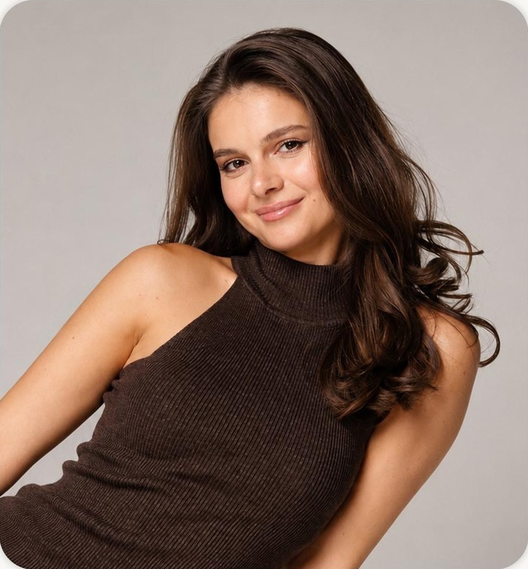
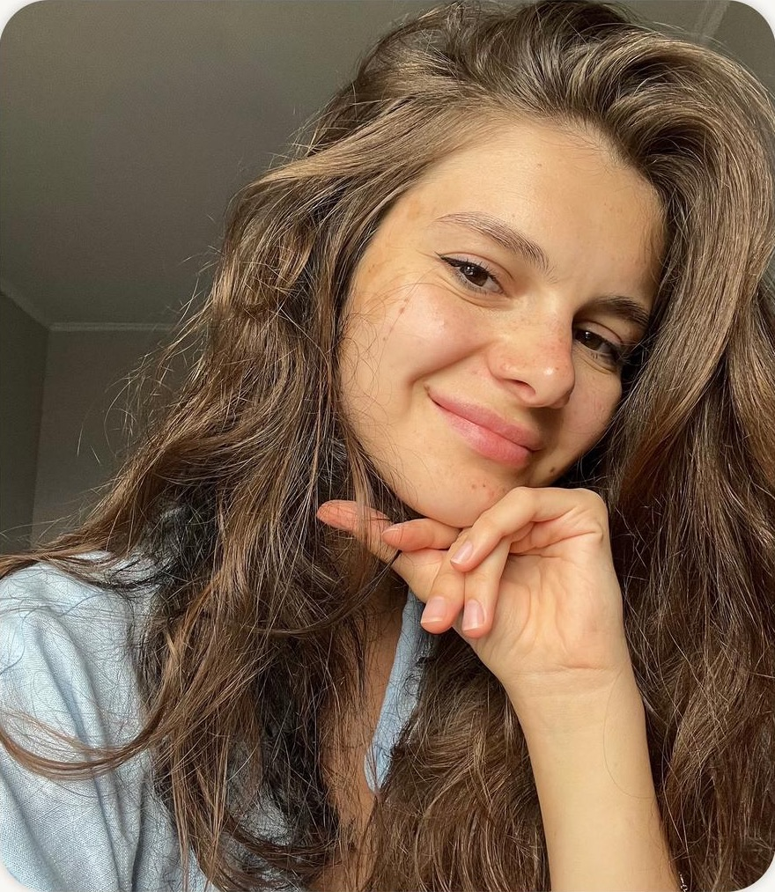

Индивидуальная терапия
7 000 ₽
Записатьсяпсихолог из медаонлайн
Если вам нужна поддержка и безопасное пространство, где вас выслушают и помогут разобраться в себе, вы в правильном месте
Привет! Меня зовут Екатерина, я практикующий психолог, семейный психолог с доп. специализацией в сексологии, КПТ-терапевт и схема-терапевт, закончила Первый МГМУ имени Сеченова.

01 запросы
Даже если кажется, что «всё хорошо», но внутри что-то беспокоит — я помогу разобраться.
02 форматы

7 000 ₽
Записаться9 000 ₽
ЗаписатьсяКонсультации проходят онлайн. Работаю по 100% предоплате. Если нужно отменить или перенести встречу, сделайте это минимум за сутки. В противном случае сессия оплачивается полностью.
Если отменю встречу я, следующая консультация для вас будет бесплатной.